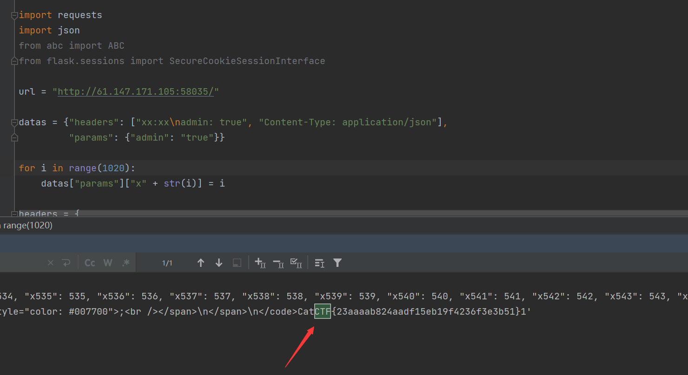

攻防世界-ez_curl
Last Update:
Word Count:
Read Time:
题目描述：
无
题目解题：
1 | |
这里先看一下题目给的附件
app.js
1 | |
审完也没啥思路，扫目录也没啥信息，思考了一会儿，只是感觉应该是抓包修改一下某些信息，令监听的服务器返回flag，所以借鉴wp吧
先看一下php代码，有一个file_get_contents(‘php://input’)，这是一个文件包含，当Content-Type为application/x-www-form-urlencoded且提交方法是POST方法时，$_POST数据与php://input数据是一致的。
然后会$headers = (array)json_decode($input)->headers把post过去的数据解码成数组，很明显post的内容就是http请求里的headers，写post数据的时候要写成json的形式。像这样：
1 | |
express框架
Express是一个流行的Node.js Web框架，它提供了许多有用的功能来构建Web应用程序。其中之一是参数解析，它允许开发者解析HTTP请求中的参数。Express提供了许多选项来配置参数解析。其中之一是parameterLimit选项。
parameterLimit选项用于指定query string或者request payload的最大数量。默认情况下，它的值是1000。如果你的应用程序需要解析大量的查询字符串或者请求负载，你可能需要增加这个限制。例如，如果你的应用程序需要处理非常长的查询字符串，你可以将parameterLimit设置为一个更高的值。
以下是一个示例，演示如何使用parameterLimit选项来增加query string和request payload的限制：
const express = require('express')
const app = express()
// 将parameterLimit设置为10000
app.use(express.json({ parameterLimit: 10000 }))
app.use(express.urlencoded({ parameterLimit: 10000, extended: true }))
在上面的代码中，我们将parameterLimit设置为10000。这将允许我们解析更大的请求负载和查询字符串。
需要注意的是，如果你将parameterLimit设置为一个非常高的值，可能会导致安全问题。攻击者可以发送恶意请求，包含大量参数，导致服务器崩溃。因此，你应该谨慎地设置参数限制，并确保你的应用程序具有有效的安全措施，以防止此类攻击。
本体两个知识点分别是：
1.express的parameterLimit默认为1000
2.根据rfc，header字段可以通过在每一行前面至少加一个SP或HT来扩展到多行
第一点：来自源代码的这一行。结合这篇文章的分析，当我们传入的参数超过1000个时，之后的参数会被舍弃掉。于是这里我们最开始发个"admin":"t"设置好admin的值，加上999个没用的参数，把程序拼接的&admin=false挤掉，即可绕过过滤。
第二点：header 字段可以通过在每一行前面至少加一个SP 或 HT 来扩展到多行。以此绕过对 headers 的过滤，也就是：
要求headers里的admin字段包含’true’就行了，可以是’xtrue’，这里根据RFC 7230(HTTP/1.1协议的定义)的规定，规定了 field-name 是由一个或多个打印的 ASCII 字符组成，不包括分隔符，包括空格。因此，如果一个 field-name 的第一个字符是空格，那么这个 HTTP header 是非法的，应该被服务器或客户端忽略或拒绝，然而，Node.js 在处理这类情况时通常是宽容的。
最终的post的内容：
1 | |
这样写可以绕过php代码中的die(“try hard”)
该headers在nodejs解析的时候，会得到如下数据：
1 | |
经nodejs解析后admin字段包含‘true’，满足条件。
python脚本如下：
1 | |

总结：
到这里对我这个菜鸡就有难度了，不借鉴wp根本不行，但是也应该主动出击，遇到这种看到了源码，应该仔细分析，比如一看那个js我没有想到，这是一个web框架express，或许知道了后可以多去了解了解有什么相关特性或者漏洞，有可能就有所思路，不至于一股脑的照搬。